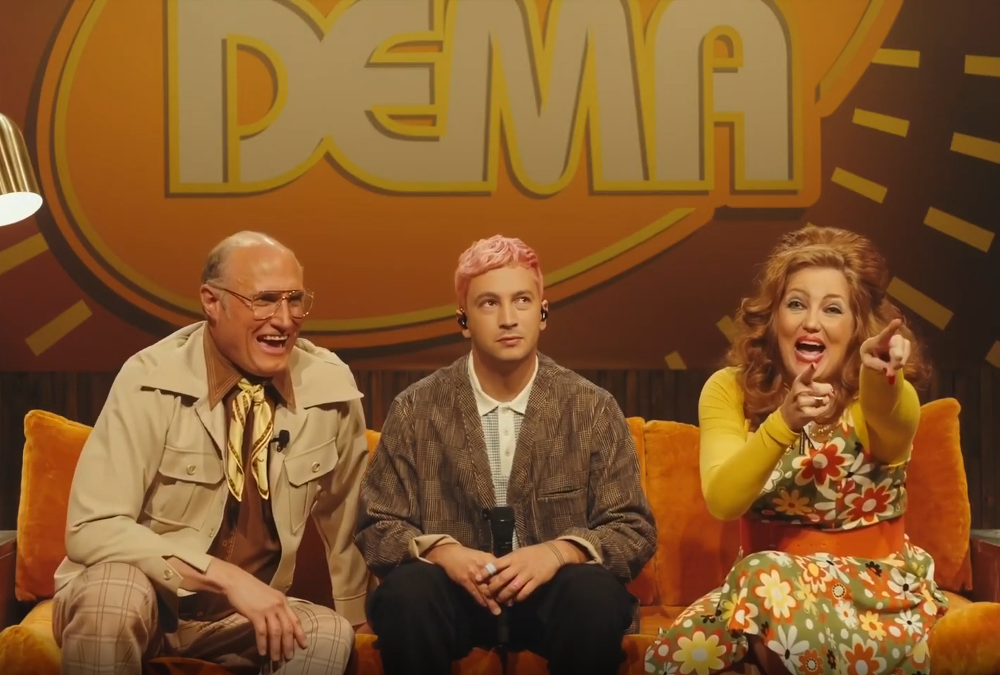
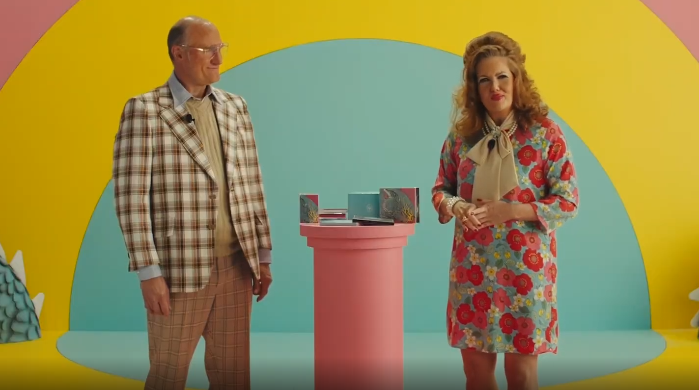
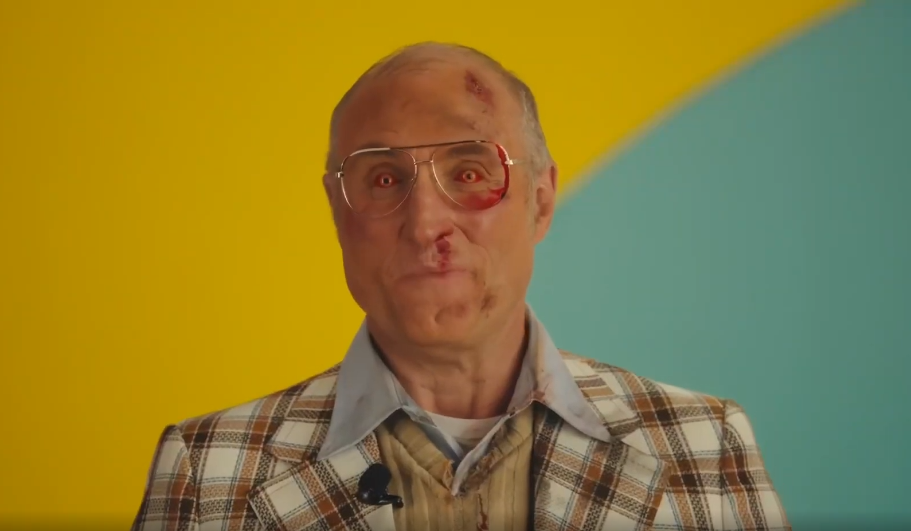
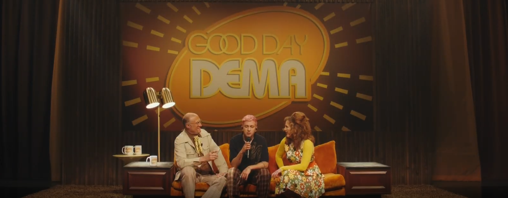
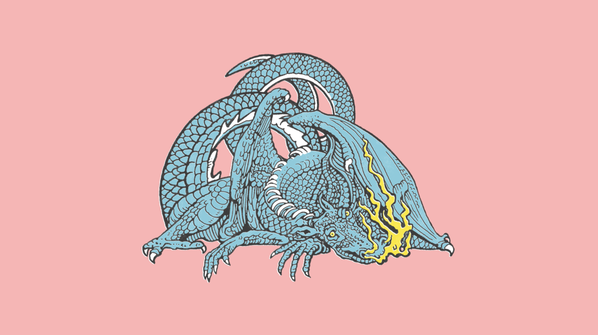
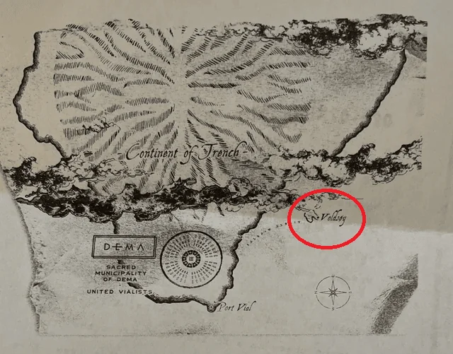
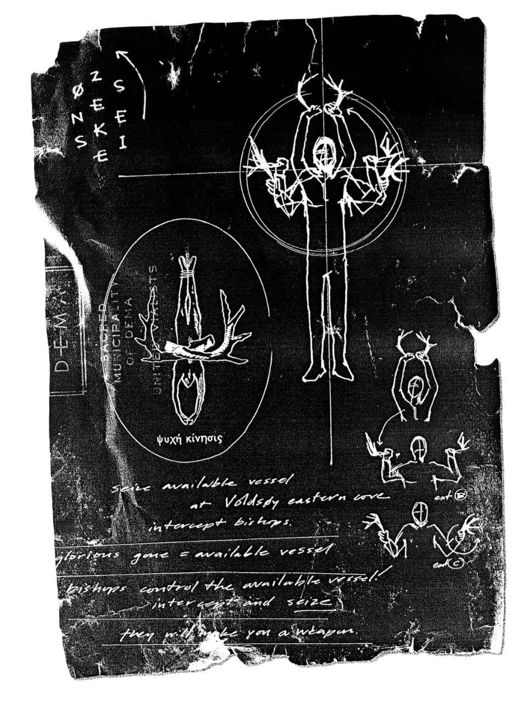

Spotify
Spotify
 Apple Music
Apple Music
CLANCY IS DEAD
Cambio de tono
Podemos ver una notable diferencia entre la tonalidad de Trench y Scaled And Icy, ¿pero por qué? Recordamos que al final de los eventos de Levitate, Clancy está de vuelta en Dema, pero esta vez se ha hecho famoso ahí dentro, y los Obispos van a aprovecharlo para hacer propaganda.
El propio título ya esconde pistas sobre lo que está pasando. Si cambiamos el orden de las letras en "Scaled And Icy" (que significa en realidad "Scaled Back And Isolated") podremos reordenar la frase "Clancy Is Dead", frase que usan los Obispos para acabar con la rebelión dentro de Dema.
Livestream Experience
Para promocionar este álbum, Twenty One Pilots hizo un evento en directo donde podíamos encontrar muchos elementos de lore. El livestream está ambientado en un programa de televisión llamado "Good Day Dema", y empieza con Tyler siendo entrevistado por dos personas, y se le ve extrañamente incómodo. Además podemos ver que Josh no está con él.
Tyler empieza a cantar Choker y aparece Josh después, siguen tocando canciones como Stressed Out (obligados por los Obispos ya que es su canción más popular) y de vez en cuando son interrumpidos por los entrevistadores, que promocionan el álbum, diciendo que está lleno de saturación y felicidad. Estas interrupciones van aparaciendo de vez en cuando.
Cada vez estas interrupciones se hacen más extrañas, y finalmente podemos ver a los presentadores con un aspecto muy deteriorado, con los ojos rojos y amarillos, ensangrentados y con moretones por la cara. Estos dos presentadores en verdad están muertos, y sus cadáveres son controlados por dos Obispos, ya que los nueve tienen el poder de controlar a los muertos.
Al final del livestream, Tyler se vuelve a sentar donde estaba cuando empezó cantando la parte final de Choker: "nobody's comming for me" (nadie viene a por mi). Acaba el livestream y Clancy sigue atrapado dentro de Dema.
Lore de Scaled And Icy
En la era de Scaled And Icy se introduce más lore que es necesario explicar antes de ver los videoclips. Lo primero de todo, y lo más evidente, es la existencia de Trash, el dragón de la portada. Es una criatura mitológica muy poderosa que murió hace tiempo.
También se nos introduce la existencia de Voldsøy (isla de la violencia en noruego). Es una isla habitada por Neds (criatura que sale en el videoclip de Chlorine de Trench), situada entre Trench y Dema, separada por el Paladin Strait (Estrecho de Paladín).
Se nos hace ver el poder de controlar a los muertos mediante un poder llamado "Seizing". Este poder pueden usarlo únicamente los Obispos de Dema.
Saturday
El videoclip de Saturday ocurre después del livestream. Los Obispos obligan a Tyler a hacer un ritual vialista encubierto como un concierto dentro de un submarino.
- La Inmersión y el Viaje - Los protagonistas Tyler y Josh se encuentran a bordo de un submarino que se desplaza bajo el agua. Están haciendo un concierto, señalando el inicio de una misión o un viaje que los lleva a las profundidades. Este segmento establece el entorno aislado y peligroso de su expedición.
- La Catástrofe Submarina - El viaje se interrumpe abruptamente cuando el vehículo sufre un daño catastrófico, un ataque produce una brecha en el cristal. El agua comienza a inundar la cabina rápidamente. Ante la emergencia, los personajes luchan por su supervivencia, preparándose para abandonar la nave condenada.
- El Escape y la Liberación - Tras la desesperada lucha, Tyler y Josh logran escapar de la embarcación averiada. Ascienden a través del agua hacia la superficie. La escena final muestra a ambos flotando a salvo, contemplando cómo los restos de su vehículo se hunden. Al final podemos ver a Trash debajo de ellos, revelando así que el ataque fue realizado por él.
The Outside
Antes de empezar los eventos que Clancy está a punto de experimentar, se nos revela que Keons (obispo de Heavydirtysoul) estaba controlando el cadáver de Trash. Los demás obispos matan a Keons por traicionar a Dema.
- La Isla - El videoclip comienza con Tyler en el suelo, en la costa de Voldsøy. A Tyler se le ve claramente muerto de frío, pero Josh, quién porta una antorcha parece estar perfectamente.
- La Criatura - A medida que Tyler y Josh avanzan por la isla, terminan viendo la figura de una extraña criatura, así que deciden seguirla. Terminan en una cueva, y la extraña figura que perseguían resultó ser un Ned, de hecho varios Neds se encontraban ahí
- El Arma - Tyler sigue a los Neds, y uno de ellos le entrega sus cuernos a Clacny. Después de hacer un extraño ritual, vemos como el cadáver de Keons, en Dema, se levanta: Clancy lo está controlando. Él se burla de los Obispos y hace arder una de las nueve torres de Dema sin ni siquiera estar ahí presente.
- Los Banditos - Después de incendiar la torre en Dema, Tyler vuelve en si y junto a Josh encienden dos antorchas. A lo lejos se ven muchas antorchas más, más allá del Paladin Strait se encuentran los Banditos, y Trench.